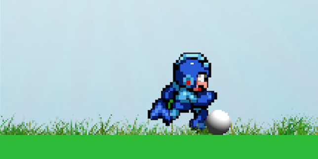
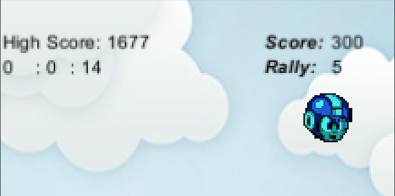
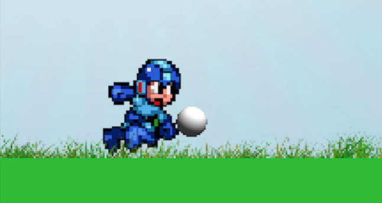

Kick Ups alpha
UnityScript | Unity3D
Kick Ups alpha is a game for mobile devices created using Unity3D and coded in UnityScript, a scripting language with the syntax of JavaScript.
As the name suggests, Kick Ups alpha is based on the popular game "keepie uppie" where the goal is to keep a football in the air for as long as possible using only the appendages on your body with the exception of your arms.
In this game the player controls the character by touching anywhere on the screen to kick the ball, however timing is everything. The closer the ball is to the characters feet will ensure the ball is kicked with a level of control.
But if the player waits too long the ball will fall to the ground and it's gameover, alternatively if the player kicks the ball too early the ball will veer off path causing the character to chase and even dive for the ball raising the possibility of dropping it.
If the player manages to get their timing right and kick the ball just before it hits the ground 5 times in a row they'll activiate the "Golden Ball", while this is activated the ball won't touch the ground regardless of timing and all scores will be multiplied